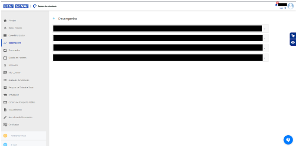
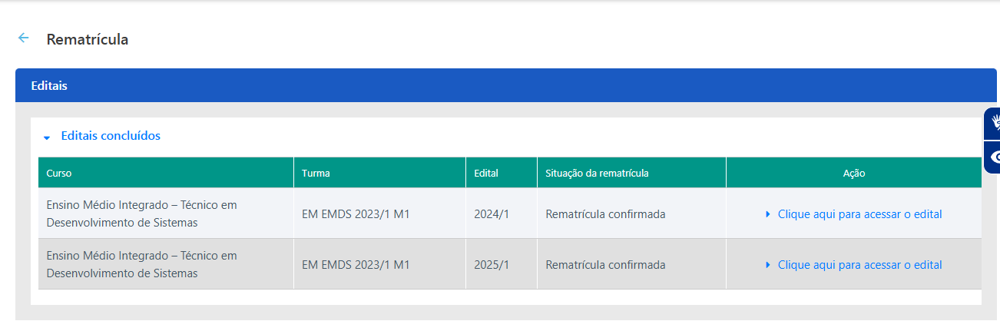
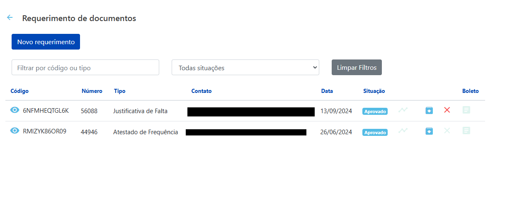

Acesso

Aqui você encontrará informações sobre como acessar o Espaço do Estudante, desde o link de acesso até a solução de problemas de login.
Dados Pessoais
Saiba como visualizar e atualizar suas informações de contato e dados cadastrais.

Permite que você visualize e, em alguns casos, edite suas informações de contato (endereço, telefone, e-mail), dados cadastrais (nome completo, data de nascimento) e outras informações relevantes para a instituição. Aqui, você pode atualizar seus dados, garantindo que a instituição tenha informações corretas para comunicação.
Desempenho

Aprenda a interpretar suas notas, histórico de frequência e CR para monitorar seu progresso acadêmico.

Boletim
Exibe um resumo do desempenho do aluno em cada disciplina, incluindo o "CF" (Conceito Final), a "Frequência" e a "Situação" (Aprovado ou Reprovado). No exemplo, vemos a disciplina "Mundo do Trabalho" com frequência de 77,50% e situação "Aprovado". Existe a opção de gerar o boletim em PDF.
Conceitos
Mostra os conceitos obtidos pelo aluno em cada avaliação (provas, trabalhos, etc.). Os conceitos podem ser notas numéricas ou letras (A, B, C, etc.), dependendo do sistema de avaliação da instituição.
Frequência
Detalha a frequência do aluno em cada aula, mostrando o número de presenças e faltas, e o percentual de frequência total.
Plano de Ensino
Apresenta o plano de ensino de cada disciplina, incluindo os objetivos, o conteúdo programático, a metodologia e os critérios de avaliação.
Documentos

Descubra como acessar e baixar documentos importantes relacionados à sua vida acadêmica.
Estágio
Contém o "Guia do Estagiário SENAI". Este guia provavelmente oferece informações e orientações sobre como realizar um estágio no SENAI, incluindo os requisitos, os procedimentos e as responsabilidades do estagiário.
Manual do Estudante
Contém o "Guia do Estudante 2024 - Cursos Profissionais", publicado em 13/05/2024. Este manual provavelmente oferece informações gerais sobre a instituição, os cursos oferecidos, os direitos e deveres dos alunos, os serviços disponíveis e outras informações úteis para a vida acadêmica.
Política de Segurança da Informação
Contém o documento "Política de Segurança da Informação para Estudantes", publicado em 14/11/2024. Este documento estabelece as diretrizes e os procedimentos que os alunos devem seguir para proteger as informações da instituição e garantir a segurança dos sistemas e dados.
Regimento
Contém o "Regimento Escolar Acadêmico 2024", publicado em 13/05/2024. Este documento estabelece as normas e os regulamentos que regem a vida acadêmica na instituição, incluindo as regras sobre matrícula, frequência, avaliação, aprovação, reprovação, transferência e outros assuntos relacionados.
Funcionalidades e Ações
- Download: Ao clicar no ícone de download ao lado de cada arquivo, o estudante pode baixar o documento para o seu computador ou dispositivo móvel.
- Visualização: Dependendo da configuração do sistema, pode ser possível visualizar o documento online antes de fazer o download.
- Organização: A organização em pastas facilita a localização dos documentos desejados.
Financeiro

Acesse informações sobre seus boletos, extrato de pagamentos e benefícios financeiros.
Permite que você consulte informações financeiras relacionadas à sua matrícula, como boletos de mensalidade, extrato de pagamentos, informações sobre bolsas de estudo, financiamentos e outros benefícios financeiros que você possa ter. Essa seção te ajuda a controlar seus gastos com a faculdade.
Acesse seus boletos em: https://estudante.sesisenai.org.br/financeiro
Rematrícula
Realize sua rematrícula online para o próximo semestre/ano letivo.
Função: Permite que o aluno realize o processo de rematrícula para o próximo semestre/ano letivo de forma online.
Ações: Provavelmente envolve a confirmação de dados, escolha de disciplinas (se aplicável), aceitação de termos e condições, e geração de boleto para pagamento da taxa de Rematrícula (se houver).
Carteira de Transporte Público

Informações sobre como solicitar ou renovar sua carteira de transporte estudantil.
Função: Oferece informações e recursos para que o aluno possa solicitar ou renovar sua carteira de transporte público estudantil.
Ações: Pode incluir o preenchimento de formulários online, o envio de documentos digitalizados, a consulta do status da solicitação e o agendamento para retirada da carteira.
Requerimentos
Faça solicitações diversas à instituição, como declarações, históricos escolares, revisão de provas, etc.
Função: Permite que o aluno faça solicitações diversas à instituição, como declarações, históricos escolares, revisão de provas, etc.
Ações: Provavelmente envolve a escolha do tipo de requerimento, o preenchimento de um formulário com os dados necessários e o envio da solicitação. O aluno pode acompanhar o status do requerimento online.
Assinatura de Documentos
Assine documentos eletronicamente, como contratos, termos de compromisso, etc.
Função: Permite que o aluno assine documentos eletronicamente, como contratos, termos de compromisso, etc.
Ações: Provavelmente envolve o uso de um certificado digital ou outra forma de autenticação para garantir a validade da assinatura.
Certificados
Visualize e faça o download de certificados de conclusão de cursos, participação em eventos, etc.
Função: Permite que o aluno visualize e faça o download de certificados de conclusão de cursos, participação em eventos, etc.
Ações: O aluno pode selecionar o certificado desejado e fazer o download em formato PDF ou outro formato disponível.
Dicas
- Explore a plataforma: Dedique um tempo para explorar todas as funcionalidades e recursos do Espaço do Estudante.
- Mantenha-se atualizado: Verifique regularmente os avisos e mensagens para não perder informações importantes.
- Organize seu tempo: Utilize o calendário para agendar seus compromissos e prazos de entrega.
- Utilize os materiais de estudo: Aproveite os materiais disponibilizados pelos professores para complementar seus estudos, como por exemplo a Plural e a Geekie One.
- Não hesite em pedir ajuda: Se tiver dúvidas ou problemas, entre em contato com o suporte técnico, com seus professores ou mesmo com seus colegas.